(Menozzi P, 1978) noticed that genetic distances seem to correlate with geographical distances
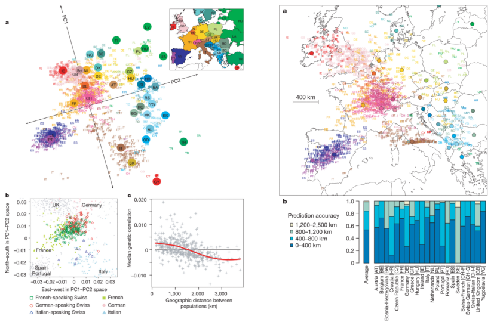
gen <- t(matrix(c(1, 0, 2, 0, 2, 0, 2, 1, 1, 1, 0, 1, 0, 2, 1, 2, 1, 1, 1, 1, 1,
0, 1, 0, 2, 0, 1, 1, 0, 2, 1, 2, 0, 1, 0), 5, by = TRUE))
colnames(gen) <- paste0("Ind", 1:5)
rownames(gen) <- paste0("SNP", 1:7)
print(gen) Ind1 Ind2 Ind3 Ind4 Ind5
SNP1 1 1 1 0 0
SNP2 0 1 2 1 2
SNP3 2 1 1 0 1
SNP4 0 0 1 2 2
SNP5 2 1 1 0 0
SNP6 0 0 1 1 1
SNP7 2 2 1 1 0gen <- t(matrix(c(1, 0, 2, 0, 2, 0, 2, 1, 1, 1, 0, 1, 0, 2, 1, 2, 1, 1, 1, 1, 1,
0, 1, 0, 2, 0, 1, 1, 0, 2, 1, 2, 0, 1, 0), 5, by = TRUE))
colnames(gen) <- paste0("Ind", 1:5)
rownames(gen) <- paste0("SNP", 1:7)
print(gen) Ind1 Ind2 Ind3 Ind4 Ind5
SNP1 1 1 1 0 0
SNP2 0 1 2 1 2
SNP3 2 1 1 0 1
SNP4 0 0 1 2 2
SNP5 2 1 1 0 0
SNP6 0 0 1 1 1
SNP7 2 2 1 1 0 Ind1 Ind2 Ind3 Ind4 Ind5
Ind1 0 3 7 10 11
Ind2 3 0 4 7 8
Ind3 7 4 0 5 4
Ind4 10 7 5 0 3
Ind5 11 8 4 3 0 [,1] [,2]
Ind1 -6.114866 0.2977272
Ind2 -3.077094 0.2402932
Ind3 0.621230 -1.7944048
Ind4 3.723118 2.1483083
Ind5 4.847612 -0.8919238We will use ANGSD (Korneliussen T, 2014) and compute genotype likelihoods on 435 bam-files from the 1000G project.
Next, we will run PCAANGSD to infer admixures proportions:
and finally we will plots the results using custom R scripts:
C <- as.matrix(read.table("pca_1000G.cov"))
e <- eigen(C)
pops <- readLines("1000G_bam_list.txt")
pops <- sapply(strsplit(pops, "\\."), function(x) x[6])
mycolor <- rep("red", length(pops))
mycolor[pops == "CEU"] <- "blue"
mycolor[pops == "CHB"] <- "green"
mycolor[pops == "MXL"] <- "brown"
mycolor[pops == "ASW"] <- "magenta"
plot(e$vectors[, 1:2], xlab = "PC1", ylab = "PC2", main = "PCA 1000G Project",
col = mycolor, pch = 19)
legend("topright", c("YRI", "CEU", "CHB", "MXL", "ASW"), fill = c("red", "blue",
"green", "brown", "magenta"), cex = 2, inset = 0.02)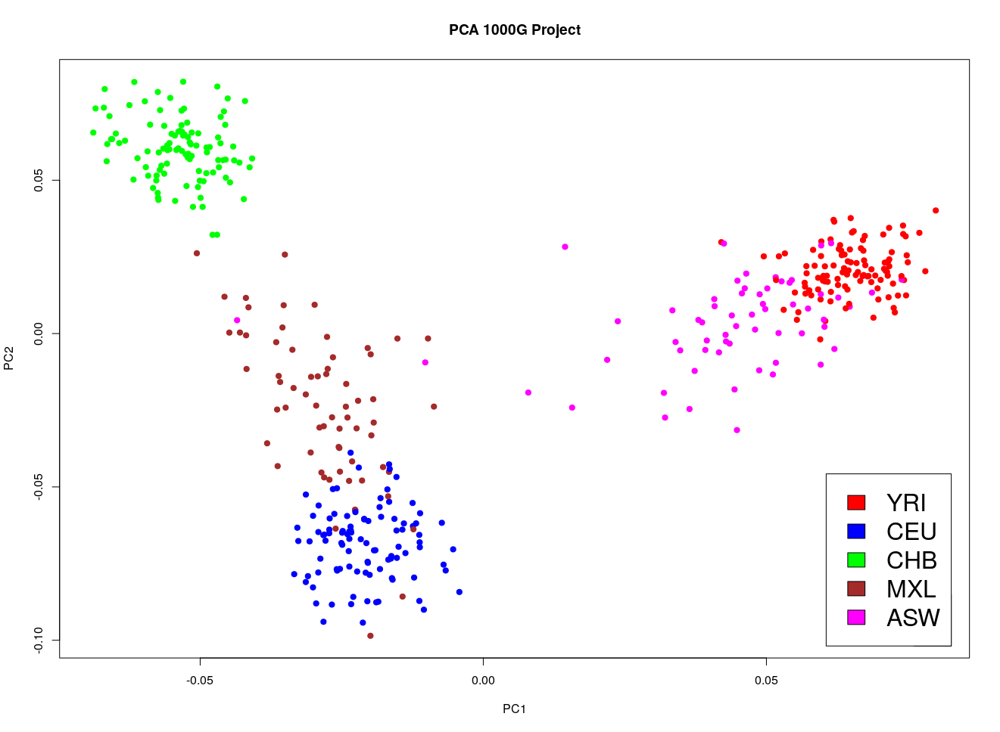
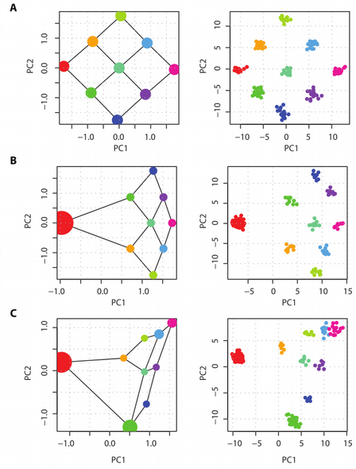
“The results described here provide an explanation. First, from Equation 10 it can be seen that the matrix M is influenced by the relative sample size from each population through the components \(t_i\). For instance, even if all populations are equally divergent from each other, those for which there are fewer samples will have larger values of \(t_i\) because relatively more pairwise comparisons are between populations.”
\[M=XX^T=\frac{1}{N}\sum_{ij}x_ix_j\] \[N=N_{pop1}+N_{pop2}+N_{pop3}+...=\sum_k N_k\] \[M_{uneven}=\sum_{ijk}\frac{1}{N_k}x_{ik}x_{jk}\]
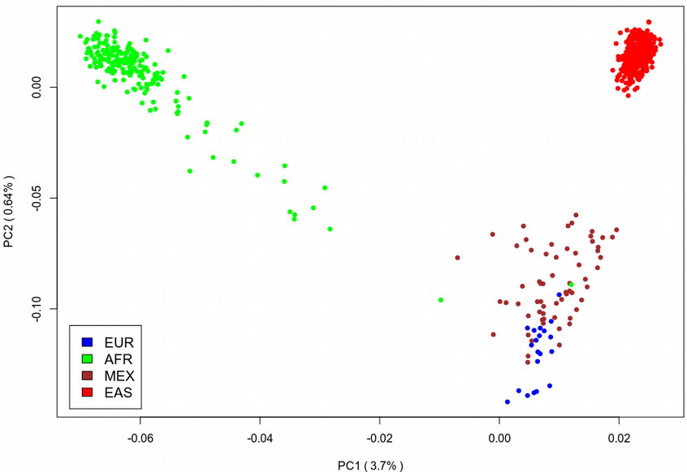
Downsampled Europeans
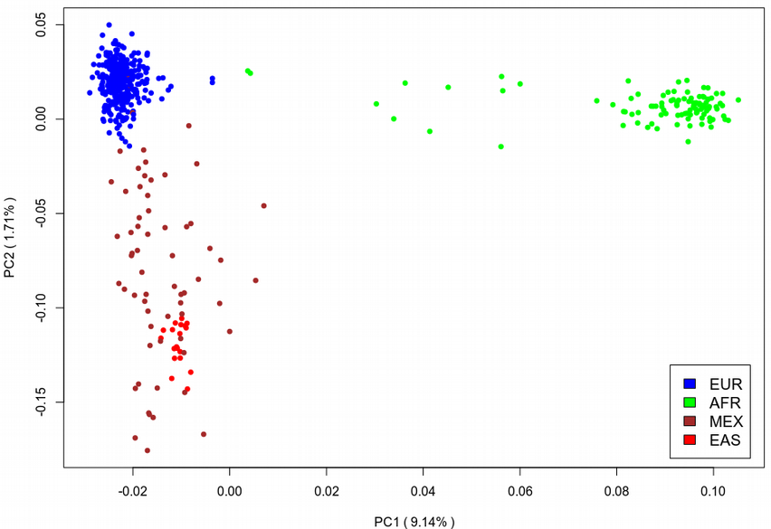
Downsampled Asians
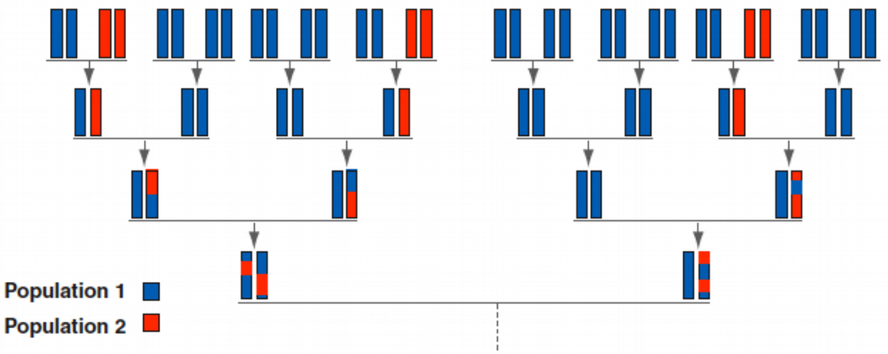
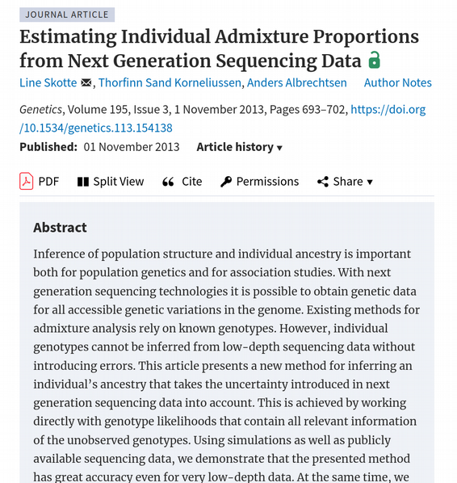
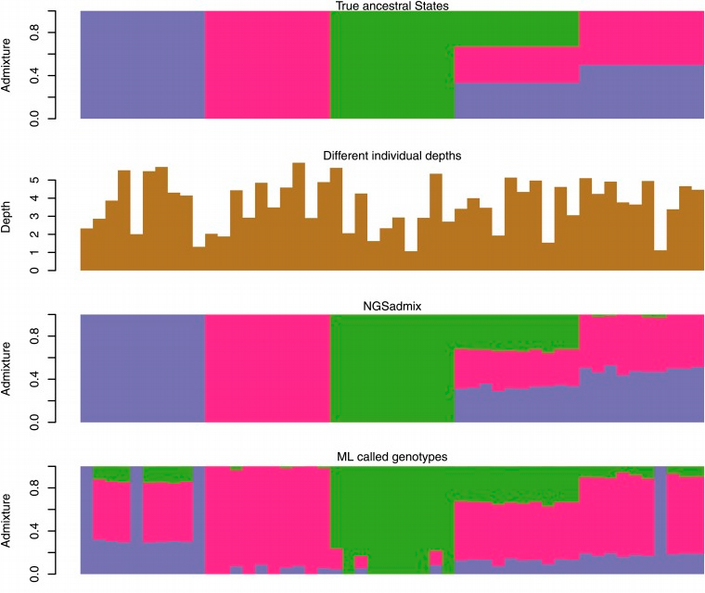
We will use ANGSD (Korneliussen T, 2014) and compute genotype likelihoods on 435 bam-files from the 1000G project.
Next, we will run NGSadmix to infer admixures proportions:
and finally we will plots the results using custom R scripts:
pops <- readLines("1000G_bam_list.txt")
pops <- sapply(strsplit(pops, "\\."), function(x) x[6])
source("https://raw.githubusercontent.com/GenisGE/evalAdmix/master/visFuns.R")
qopts <- read.table("1000G.qopt")
ord <- orderInds(pop = pops, q = qopts, popord = c("YRI", "ASW", "CEU", "MXL",
"CHB"))
barplot(t(qopts)[, ord], col = c(3, 2, 4), las = 2, space = 0, border = NA)
text(sort(tapply(1:length(pops), pops[ord], mean)), -0.05, unique(pops[ord]))
abline(v = cumsum(sapply(unique(pops[ord]), function(x) {
sum(pops[ord] == x)
})), col = 1, lwd = 1.2)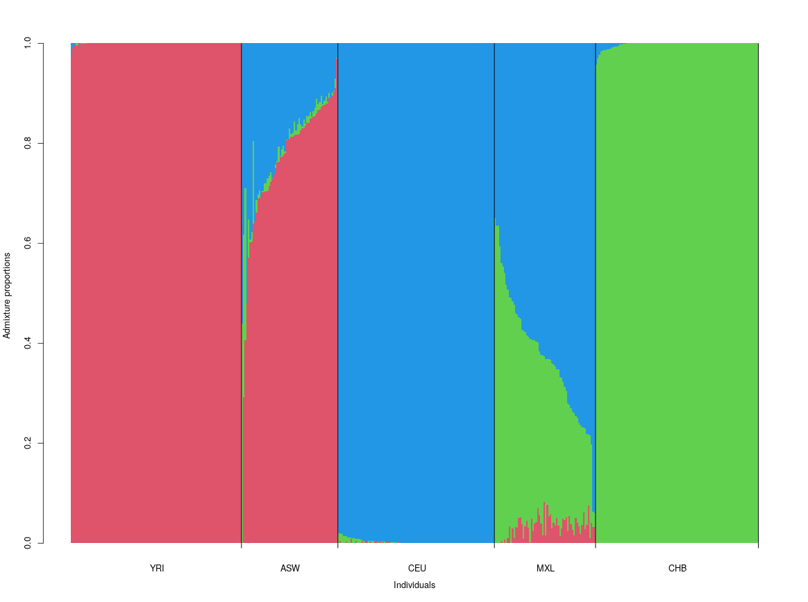
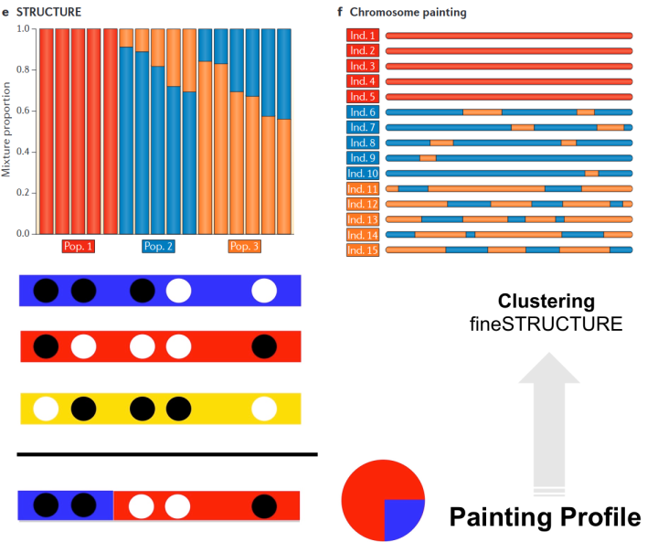
Ancestry assignments in STRUCTURE / ADMIXTURE do not identify where admixture has occurred
Haplotype-based methods explore local ancestry, LD, recombination and subsequently fine-scale patterns of population structure at different scales
Chromosome painting: the genome is a mosaic of LD blocks separated by recombination
ChromoPainter and fineSTRUCTURE are tools for resolving subtle differences between populations.
\[ F_{st}=\frac{\pi_{12}-\frac{\pi_{1}+\pi_{2}}{2}}{\pi_{12}} \sim \frac{\sigma_{subpops}^2}{\sigma_{total}^2} \]
library("admixtools")
library("tidyverse")
admixtools::extract_f2("AADR", outdir = "f2_AADR")
f2_aadr <- read_f2("f2_AADR")
fst_aadr <- fst(f2_aadr)
fst_aadr
mat <- f2(f2_aadr, unique_only = F) %>%
select(-se) %>%
pivot_wider(names_from = pop2, values_from = est) %>%
column_to_rownames("pop1") %>%
as.matrix()
library("pheatmap")
pheatmap(mat, cluster_rows = TRUE, cluster_cols = TRUE)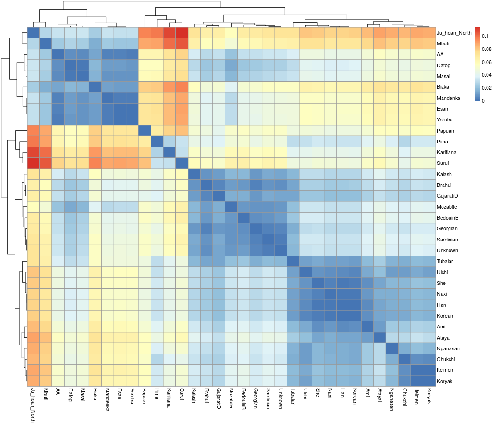
ALT-116 M Tubalar
ALT-117 M Tubalar
ALT-165 M Tubalar
ALT-845 M Tubalar
ALT-846 M Tubalar
GEO-002 M Georgian
GEO-005 M Georgian
GEO-010 M Georgian
GEO-015 M Georgian
GEO-020 M Georgian rs3094315 1 0.020130 752566 G A
rs7419119 1 0.022518 842013 T G
rs13302957 1 0.024116 891021 G A
rs6696609 1 0.024457 903426 C T
rs8997 1 0.025727 949654 A G
rs9442372 1 0.026288 1018704 A G
rs147606383 1 0.026665 1045331 G A
rs4970405 1 0.026674 1048955 A G12109000100001100012110220021200101020000110010200001011011000011010000011000111000011011010212912100101100100011102112122221212221110000010100000001002291001111100000011000010000000100000000001100001100000111102222220111211202221121121120000001210110100001000100000001111111021222210000000000110000001011122010100011000101120101211000000010100000000000000101010100111100110011000100000011001100011001111111110110211120012021102222101112011222221122222222221212110011001100011010000000001100101011001000111011009001122112010011121112112102101010000001000000010100001000000000000101100011001000010000000000000002000000001011000000001911001
12122211222121212210121002100111200122211022221121010222112122001012002201122111211111221221222222112211222122111111212202221212212112221222222222212222202122112221222222212212212102222222122222222221122222221222112222222222222222212012222212222111210222221222122221222111111211011122222222222122222201111222222121212210222121112222222122222222212211112222122222212122121122122221222021001112122210210212212122222121111222222222222112122212221212212212222222022202222212122122112121112112211212122212222212212122222222212221222212101021220022021222222121122222222222222222221222222212220122222122202222121222122222222121221212001121102210
22000100100000000010011000001111001120001111001110001010021001111200020010000000100001110000001112000000000010012020211201001012111022221222222112200121000010000100000000000000110001000101001102101121011029011011112000001110010000101101110001000111211022121221111200020001000000000000000000000100001001002110000100001100000001000101201010001100010201111210000110001010100000000000010200210111100010001010101001001101111112020011000110200011010200000000111001000020100000100000000200012000101111201000001000002000100000011011112000201110200100110100101000100010100000010000000101000000010000000111000111011001110001100111011010111021111110
20212111212120212212102212121100202122211121121202122222122221121022022222022112100111210121122221122212222212210201012100221100021120000001011001121122210112121111222222210212102101221121221020121212201121210000210210111002192111010100111211220001210200101001111020202122222221222222222122221221222100210001211121221211222111112101021112212122212121111122121112112022222222122221112221222122922211211100111121112121000000100001219011001100009000110000110011001902211211222222222022211221121010121221222212211012212100000020221112221221101121021222212122122212222222111222212112122222210121222112222111210221122222222111221212011101201111
00000000011111900000000000000000000000000000000100010000000000000000000000000010000010001000000000000010000000011120121122110122212120000000000000010101200000000010200000100020000000000010000010000000090900102100110112101209110010121111220000000212911100000900000000002000000000000000000000000000000101202102000100010000011001001111000001001000000000001000100100000100000000000010000000000000000000000211211001010201021101200111102112121911221121110112102112111101000010010000010000000002000100012000000100010012000112111110100001001001000011000000001000000001000010001000000001000110000000001000000000000000001001000000000000000100000000
00001100010112211012210220121110121000000120020200101001101000111011100011000100021110210010101211210010011110000110010002000122102000000010101001121220011221100122210001100100010110000110000000000000009000011111202211100122211112201121121101012111000000000000000001000110101201010111111100100000001121111200000210011121111101000110010001010001011000001200101121122210100101000121000001011002100101001201021110211111112211112012111121111120112011201112111111121112011011011000110000210001000210210012000210021122012110021211100011012111122211112100011110001010000020100000000000000010001101000000100001001002111000000000010000000100000111
22222222222222222222222222222222222222222222222222222222222222222222222222222222222222222222222222222222222222222222222222222222222222222222222222222222222222222222222211222222222222222222222222222222222222222222222222222222292222222222222222222222222222222222222222222222222222222222222222222222221222222222222222222222222222222222222222222222222222222222222222222222222222222222222222222222222222222222222222222222222222222222222222222222222222222222222222222222222222222222222222222222222222222222222222222222222222222222222122222222222222222222222222222222222222222222222222222222222222222222222222222222222222222222222222222222222222
22222212222122112220021200001212221221222101222121221222211121212222222112222222222222121222121122122212222222222222222222222222222221212222221221102221212121222201122222112222222112222122222122222222222222222222222222222222222222222222221122211222222222222222222221222112111020212211222222122212112222222222022122922122222221121222222212212221222222221022221222112122222212122221212221212210221222222222222222222222222222222222222222222222222222222222222222222222222212221222222222212222222222112212222222221212222222222212222211110122121011122222120112221212211212122222211222212222221121122222222221221221112222222222222222222212222222
22222102212120012220021200001212201221222101222121121222111121212221222111221121201112021212111012012201211122121122121101221111112121212222221221102201201000122100022222022122222112222112222122292222222222112000220011221211121129121212221121210122002122222222222221210112111020212210121122122211111101211110022122121111111120121110922211212221211222221022221121111021122111121111212221211210221922222212122221211220222002221119222012110201202122221211202212222201222211211222212222112222222212110211222222211201220011112212212211110121101011120122110012221212211212122222211222112212221121122222122221221220011222229222222222222112222221
22222222222222222222220220222222222222222222221222212222221222222222222222222212122221212222222222222222222222211221101220111211121210212222112221222222222212222222222222222222222222222222222222222222222222111110110012100212012222111202211222222111110022222222222222221012919990910202222122222222222222120100222222221222222222222200222222222222222222229222221222222221122222222222222222122212221222222221212111112211021110111112122002101211201122021211011121121101122222122221222221222221122212221121222222212122222110221202212221222222122212221222222222122222222222222122222222222222222222222212222212222221212222222222222222222222222222We will use ANGSD (Korneliussen T, 2014) and compute Fst between CEU and YRI populations from the 1000G project.
angsd -b 1000G_CEU_bam_list.txt -anc anc.fa -out CEU -dosaf 1 -gl 1
angsd -b 1000G_YRI_bam_list.txt -anc anc.fa -out YRI -dosaf 1 -gl 1
realSFS CEU.saf.idx YRI.saf.idx > CEU.YRI.ml
realSFS fst index CEU.saf.idx YRI.saf.idx -sfs CEU.YRI.ml -fstout CEU_YRI
realSFS fst stats CEU_YRI.fst.idx
realSFS fst stats2 CEU_YRI.fst.idx -win 50 -step 10 > slidingwindow_win50_step10and finally we will plots the results using custom R scripts:
df <- read.delim("slidingwindow_win50_step10", header = FALSE)
df <- df[-1, ]
df$V2 <- as.numeric(df$V2)
df$V3 <- as.numeric(df$V3)
df$V5 <- as.numeric(df$V5)
df <- df[order(df$V2, df$V3), ]
rownames(df) <- seq(1, dim(df)[1], 1)
plot(df$V5, col = df$V2, xlab = "Chromosomes", ylab = "Fst", xaxt = "n")
myticks <- as.numeric(rownames(df[!duplicated(df$V2), ]))
axis(side = 1, at = myticks, labels = seq(1, 21, 1))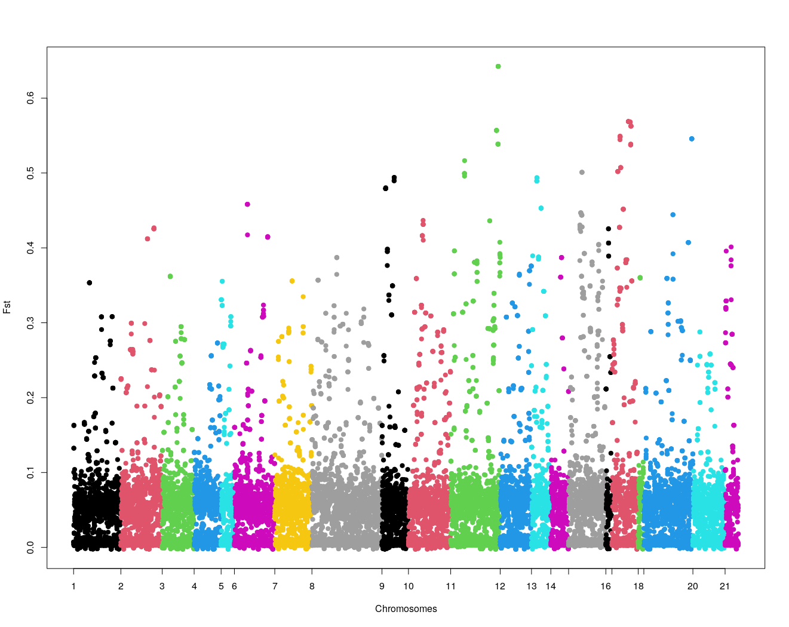
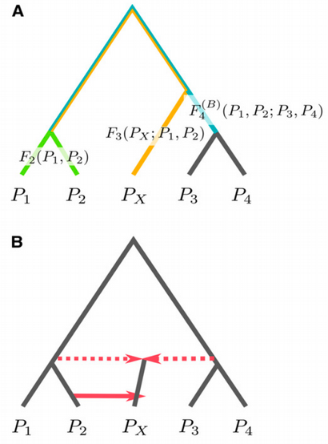
Treeness test: are populations related in a tree-like fashion (Reich et al. 2009)?
Admixture test: ss a particular population descended from multiple ancestral populations (Reich et al. 2009)?
Admixture proportions: what are the contributions from different populations to a focal population (Green et al. 2010; Haak et al. 2015)?
Number of founders: how many founder populations are there for a certain region (Reich et al. 2012; Lazaridis et al. 2014)?
Complex demography: how can mixtures and splits of population explain demography (Patterson et al. 2012; Lipson et al. 2013)?
Closest relative: what is the closest relative to a contemporary or ancient population (Raghavan et al. 2014)?
\[F_2=2\pi_{12}-\pi_{1}-\pi_{2}\]
\[F_3(P_X; P_1, P_2)=\frac{1}{2}\left(F_2(P_X, P_1)+F_2(P_X, P_2)-F_2(P_1, P_2)\right)\]
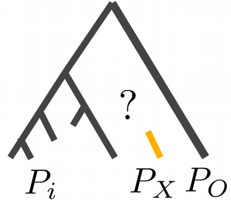
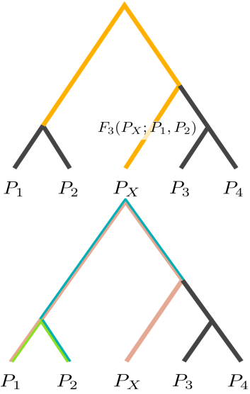
We will use the AADR dataset and compute F3-statistic for a (presumably!) European population, which is marked as Unknown in the dataset, with respect to a panel of other World populations using a Mbuti as an outgroup population.
library("admixtools")
library("tidyverse")
admixtools::extract_f2("AADR", outdir = "f2_AADR")
f2_aadr <- read_f2("f2_AADR")
fst_aadr <- fst(f2_aadr)
fst_aadr
f3_aadr <- f3(f2_aadr, pop1 = "Mbuti", pop2 = "Unknown", pop3 = unique(ind$pop)) %>%
arrange(est)
f3_aadr
viz_outgroup_f3 <- function(f3_res) {
f3_res %>%
mutate(pop3 = fct_reorder(pop3, est)) %>%
ggplot(aes(x = pop3, y = est, ymin = est - 3 * se, ymax = est + 3 * se)) +
geom_point() + geom_errorbar() + coord_flip() + theme_bw(25) + xlab(NULL) +
ylab("f3")
}
viz_outgroup_f3(f3_aadr)Can you guess what was the Unknown population?
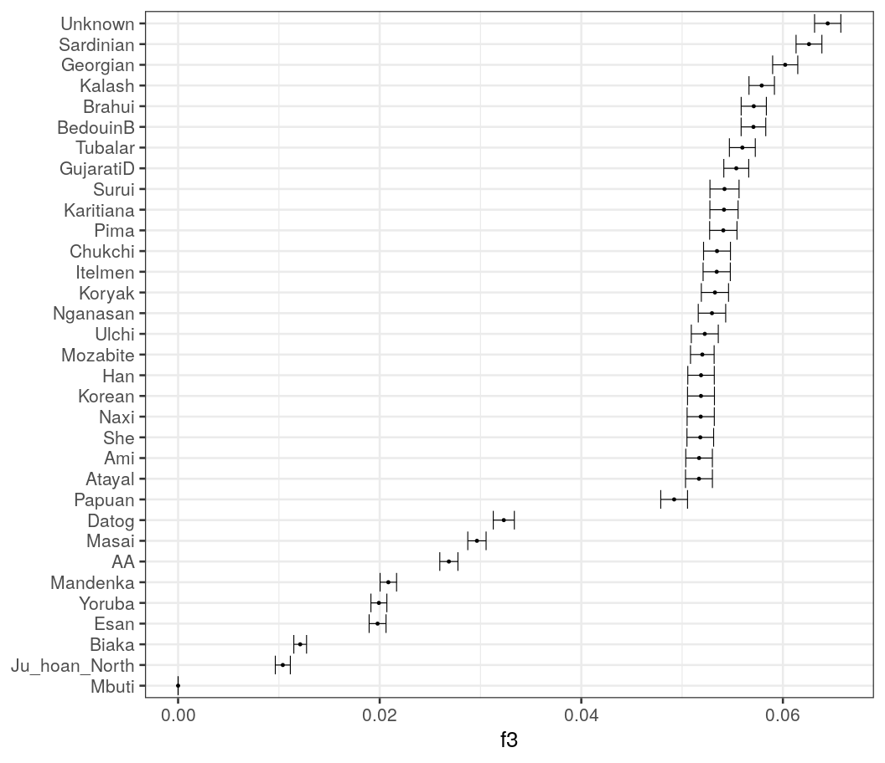
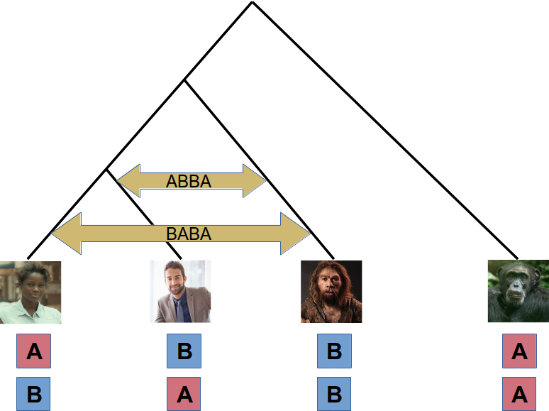
Four populations considered: Ape is an outgroup, Europeans and Africans are tested for their gene flow with Neanderthals
A – ancestral allele, B – derived allele
Count number of sites corresponding to ABBA and BABA situations
\[D=\frac{N_{ABBA}-N_{BABA}}{N_{ABBA}+N_{BABA}}\]
\(N_{ABBA}\) the total counts of ABBA patterns, \(N_{BABA}\) the total counts of BABA patterns
Exess of shared derived alleles between Europeans and Neanderthals indicates a gene flow between them
Positive values of D imply Neanderthals are closer to Europeans
Negative values of D imply Neanderthals are closer to Africans
We will use ANGSD (Korneliussen T, 2014) and compute D-statistic in irder to test potential Neanderthal introgression to European (CEU) and African (YRI) populations from the 1000G project.
and, finally, we will display the resulting table of D-statistics and plot the ABBA and BABA counts using custom R scripts:
df <- read.delim(file.path(path, "out_abbababa_results.txt"), header = T, sep = "\t")
df <- df[grepl("Neandertal", as.character(df$H3)), ]
df <- df[grepl("CEU", as.character(df$H2)), ]
df <- df[grepl("YRI", as.character(df$H1)), ]
YRI <- matrix(unlist(strsplit(as.character(df$H1), "\\.")), ncol = 9, byrow = T)
df$H1 <- paste(YRI[, 6], YRI[, 2], sep = "_")
CEU <- matrix(unlist(strsplit(as.character(df$H2), "\\.")), ncol = 9, byrow = T)
df$H2 <- paste(CEU[, 6], CEU[, 2], sep = "_")
df$H3 <- "NEAND"
df[1:8, 1:8] H1 H2 H3 nABBA nBABA Dstat jackEst SE
11 YRI_NA19102 CEU_NA12342 NEAND 51 46 0.05154639 0.05154639 0.1220787
12 YRI_NA19213 CEU_NA12342 NEAND 38 31 0.10144930 0.10144930 0.1286760
13 YRI_NA18504 CEU_NA12342 NEAND 50 53 -0.02912621 -0.02912621 0.1353893
14 YRI_NA19108 CEU_NA12342 NEAND 38 42 -0.05000000 -0.05000000 0.1393287
15 YRI_NA19238 CEU_NA12342 NEAND 44 38 0.07317073 0.07317073 0.1305890
16 YRI_NA19102 CEU_NA12348 NEAND 46 45 0.01098901 0.01098901 0.1076116
17 YRI_NA19213 CEU_NA12348 NEAND 37 34 0.04225352 0.04225352 0.1122396
18 YRI_NA18504 CEU_NA12348 NEAND 42 49 -0.07692308 -0.07692308 0.1068372Population structure